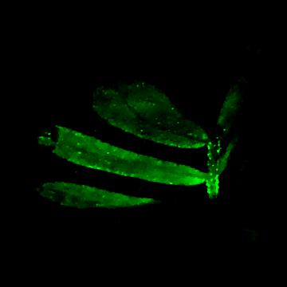
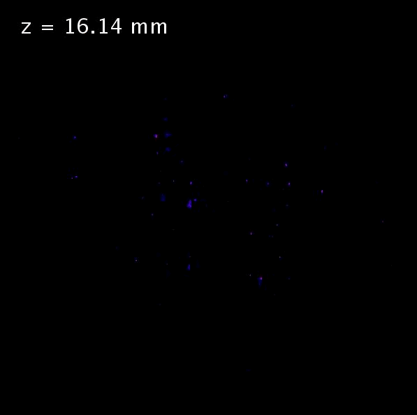
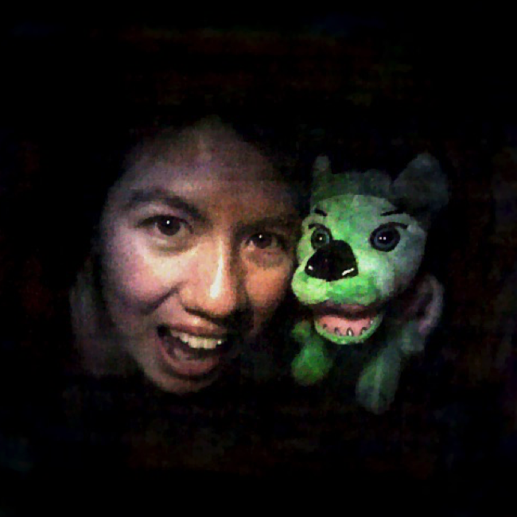

DiffuserCam Gallery
Below are some examples of reconstructions from one of the DiffuserCam prototypes. All of the images were captured with no lenses in a single exposure.

Rotating image of a 3D reconstruction of a small plant.
Rotating image of a 3D reconstruction of a small plant.

Z-stack of a 3D reconstruction of a USAF resolution target placed at an angle in front of the camera.
Z-stack of a 3D reconstruction of a USAF resolution target placed at an angle in front of the camera.

2D photograph taken with no lenses. When objects are far from the camera, there is not much depth information, but we can still reconstruct 2D images.
2D photograph taken with no lenses. When objects are far from the camera, there is not much depth information, but we can still reconstruct 2D images.

2D video taken with DiffuserCam. Since each frame is captured in a single exposure, dynamic scenes are easily recorded.